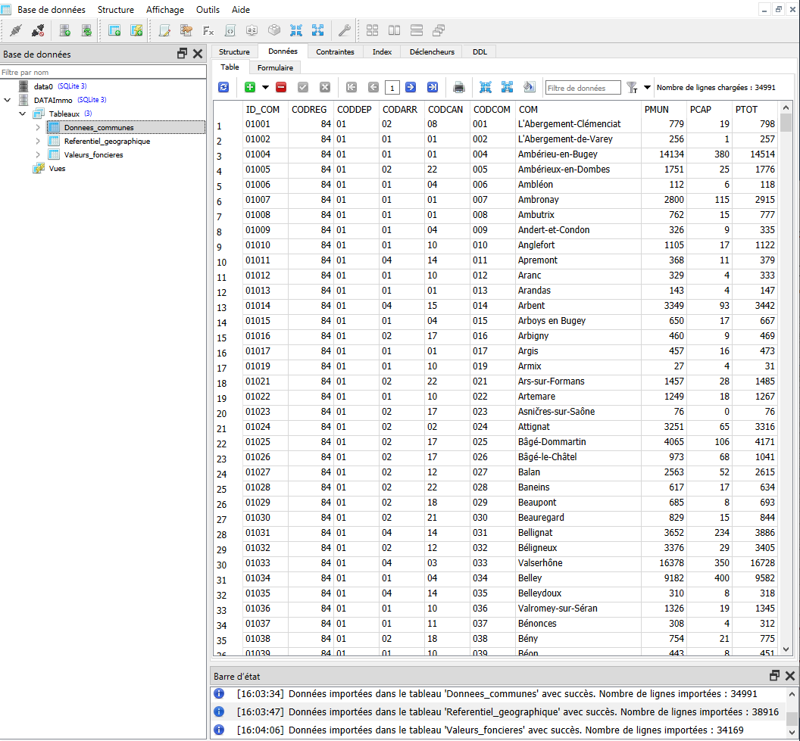
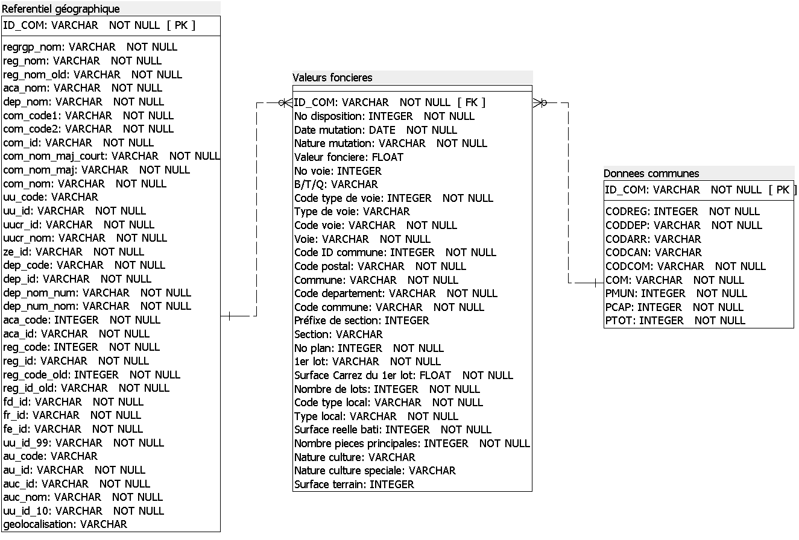

- 108 076lignes chargées sur 3 tables
- 12requêtes métier livrées
- 7attributs documentés par champ
01 Contexte & besoin métier
Le projet DATAImmo vise à améliorer la prévision des prix de vente de biens immobiliers. Avant de faire des prévisions, il fallait d'abord une base de données exploitable.
Les données existaient sous forme de fichiers plats hétérogènes : transactions foncières, caractéristiques des communes, référentiel géographique. Sans structure commune, chaque question métier exigeait un retraitement manuel, et deux personnes posant la même question obtenaient deux réponses différentes.
Il fallait donc construire une base documentée, bien structurée et conforme au RGPD, sur laquelle un futur modèle de prévision pourra s'appuyer.
02 Données
| Table | Contenu | Lignes chargées |
|---|---|---|
| Valeurs foncières | Transactions immobilières : prix, surface, type de bien, date | 34 169 |
| Données communes | Population municipale, comptée à part, totale | 34 991 |
| Référentiel géographique | Codes commune, département, région, canton | 38 916 |
Qualité et limites
- Les trois tables ne décrivent pas la même chose. L'une liste des ventes, les autres des communes : il fallait définir comment les relier avant de charger les données.
- Codes géographiques différents d'une source à l'autre, d'où la nécessité d'un référentiel commun.
- Données à caractère personnel présentes dans les transactions foncières brutes.
- Périmètre temporel restreint : le premier semestre 2020, marqué par des épisodes de confinement, ce qui affecte la représentativité des volumes de vente.
03 Démarche
-
Cadrer la conformité avant de charger
La stratégie RGPD a été définie en amont : suppression des données à caractère personnel, durée de conservation explicite, stratégie de sauvegarde documentée.
Pourquoi ce choix
Une fois des données personnelles chargées, elles se propagent dans les sauvegardes, les exports et les copies de travail. Il est donc bien plus simple de les écarter dès la conception que de reprendre toute la base ensuite.
-
Rédiger le dictionnaire de données
Chaque champ a été documenté selon sept attributs : code, signification, type, longueur, nature (élémentaire, calculée ou concaténée), règle de gestion et règle de calcul. Un lexique complète l'ensemble.
Pourquoi ce choix
Le dictionnaire fixe les définitions avant d'écrire la première requête. Il règle dès le départ les questions qui posent problème ensuite : la surface est-elle habitable ou au sol, le prix inclut-il les frais, une commune fusionnée compte-t-elle pour une ou deux ?
Distinguer explicitement les champs élémentaires des champs calculés évite aussi qu'un indicateur dérivé soit un jour recalculé différemment par quelqu'un d'autre, et que deux chiffres officiels se contredisent.
-
Concevoir le schéma relationnel normalisé
Clés primaires, clés étrangères et cardinalités définies avant toute création de table.
Pourquoi la normalisation
Le référentiel géographique est isolé plutôt que dupliqué dans chaque table : le nom d'une commune n'est stocké qu'une fois. Une correction se propage partout, et aucune incohérence entre deux orthographes du même lieu ne peut s'installer. Ce problème est classique et coûteux sur les données géographiques françaises.
-
Créer et charger la base
Génération du script de création des tables, puis chargement des trois jeux sous SQLite avec vérification des volumes à chaque import.

-
Écrire douze requêtes répondant à des questions métier
Jointures entre les trois tables, filtres temporels par trimestre, agrégations et classements régionaux ou départementaux.
Pourquoi partir des questions
Chaque requête répond à une question posée par le métier. C'est aussi un test du modèle : si une question simple demande une requête compliquée, le schéma est à revoir.
Consulter le livrable
04 Résultats & impact
Une base documentée, normalisée et conforme, accompagnée de douze requêtes couvrant les questions récurrentes de l'équipe.
Questions désormais outillées
- Nombre de ventes d'appartements par région sur le premier semestre 2020.
- Classement des dix départements aux prix au mètre carré les plus élevés.
- Prix moyen au mètre carré en Île-de-France.
- Taux d'évolution des ventes entre le premier et le deuxième trimestre 2020.
- Classement des régions selon le prix au mètre carré des grands appartements.

Ce que le livrable change
- Une même question donne toujours le même chiffre. Le dictionnaire fixe une définition unique pour chaque indicateur.
- La conformité RGPD est prise en compte dès la conception.
- La base est prête pour la modélisation prédictive, objectif initial du projet DATAImmo.
Recommandations
- Tenir le dictionnaire à jour à chaque évolution de la base, sinon il devient trompeur.
- Élargir le périmètre temporel avant toute prédiction.
- Envisager une couche de restitution pour rendre ces requêtes accessibles sans SQL.
05 Limites & prochaines pistes
Le premier semestre 2020 n'est pas une période de référence. Les volumes de transactions ont été fortement perturbés. Toute tendance calculée sur cette seule période est à manier avec prudence.
Le cadrage RGPD reste à formaliser pour une mise en production. Les principes sont posés, mais un usage réel exigerait registre de traitement, désignation des responsabilités et procédure d'exercice des droits.
SQLite convient à l'étude, pas à l'exploitation partagée.
Prochaines pistes
- Étendre la base sur plusieurs années pour permettre une modélisation prédictive robuste.
- Migrer vers un moteur serveur si la base doit être partagée entre plusieurs utilisateurs.
- Compléter le cadrage RGPD par un registre de traitement en vue d'une exploitation réelle.
- Enrichir de variables explicatives du prix absentes des sources actuelles : transports, équipements, tension locative.